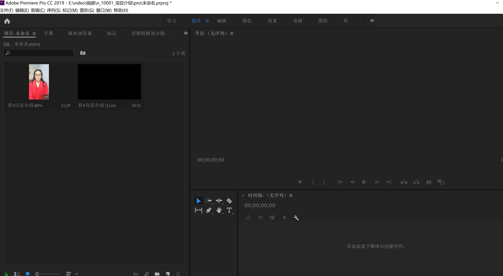
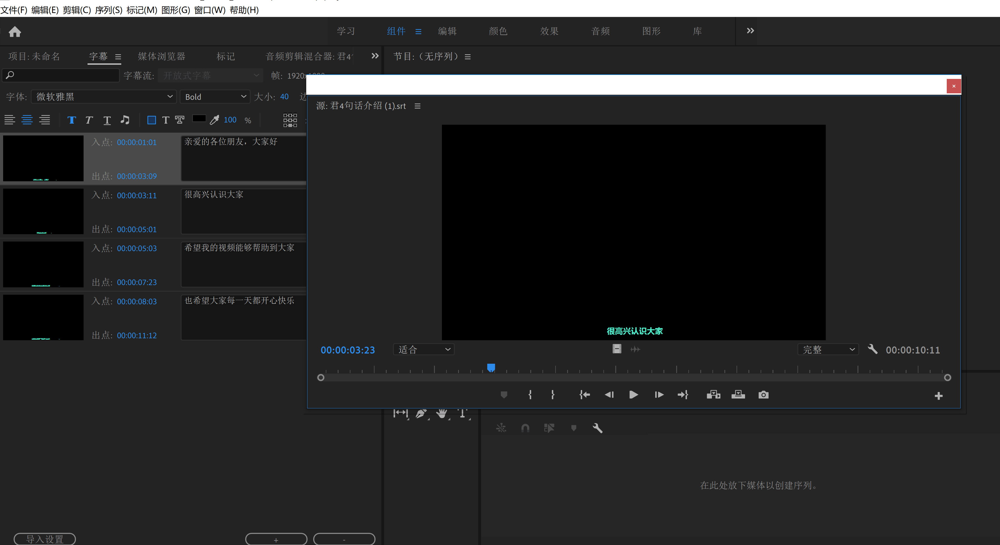
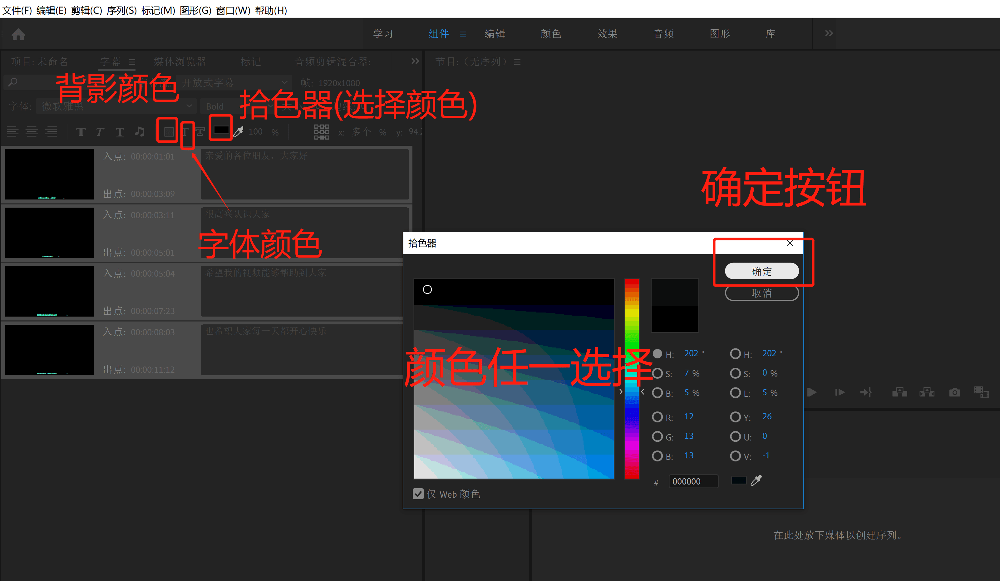
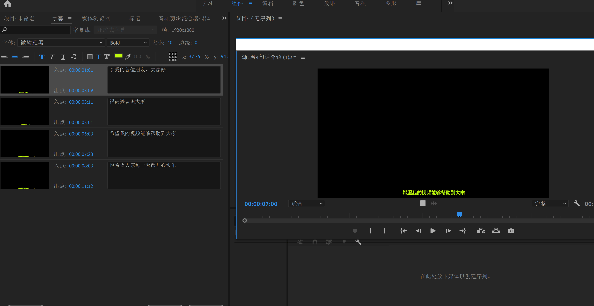
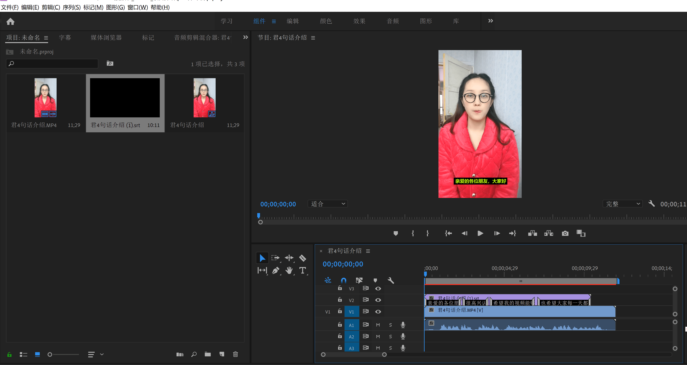
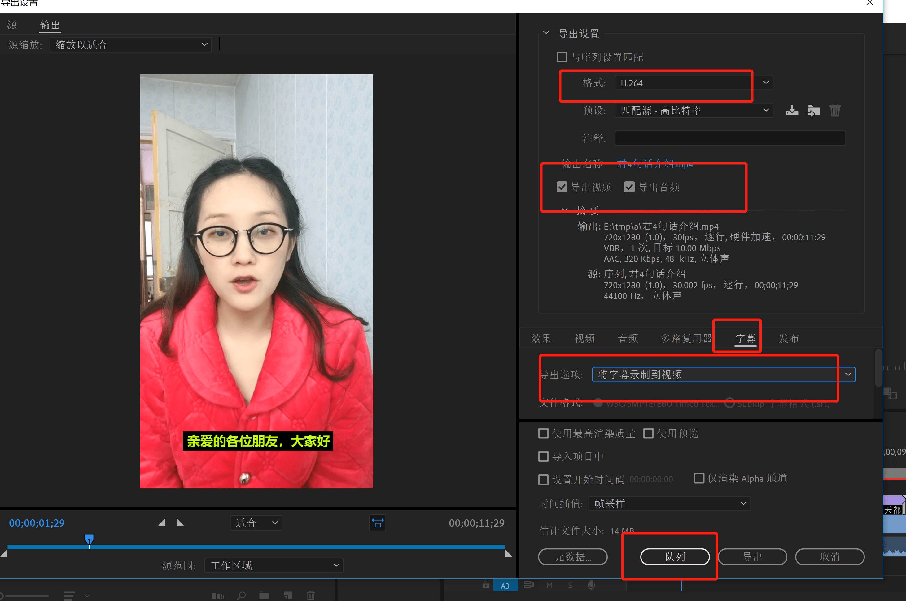
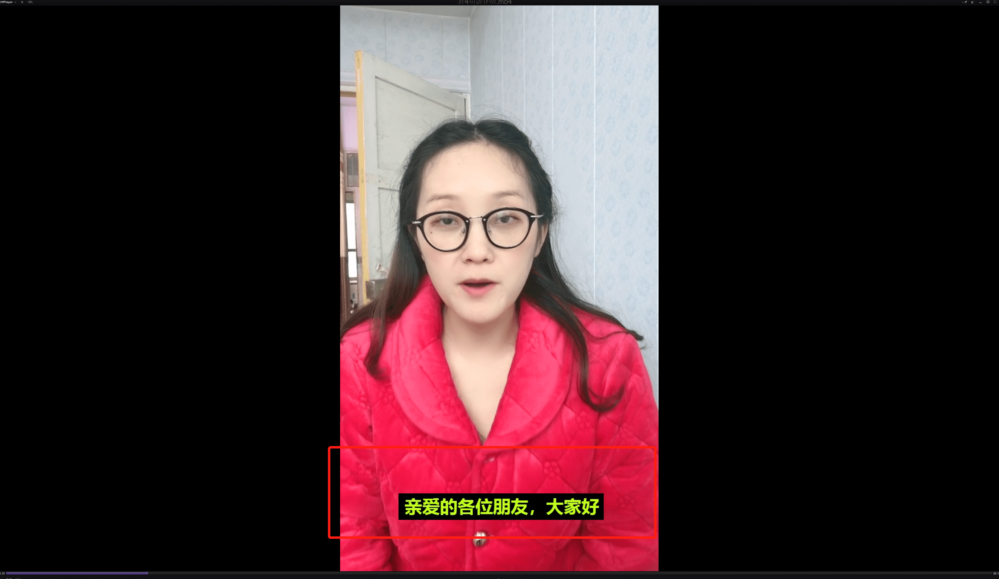
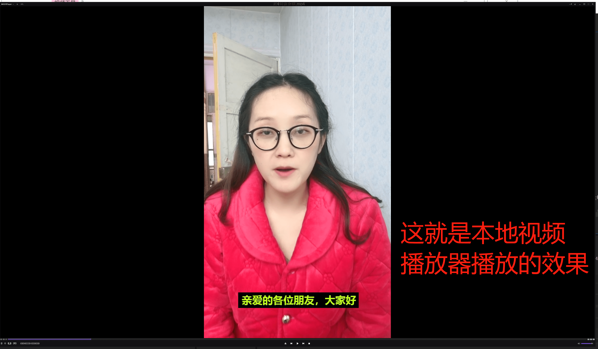

PR中SRT字幕样式设置
- 第一步：将视频、srt字幕文件导入PR项目
- 第二步：双击srt字幕文件样式，查看默认字幕样式
- 第三步：修改srt字幕样式
- 第四步：时间轴上拖入视频、字幕
- 第五步：导出视频
第一步:将视频、srt字幕文件导入

第二步:双击srt字幕文件样式，查看默认字幕样式

第三步：修改srt字幕样式
- 全选需要设置样式的字幕，因为PR中字幕是可以精确到单个字单独设置字幕的
- 选中字幕的范围，就是选中的字幕统一设置样式，这里我们统一设置所有字幕所有样式
- 将鼠标移动到字幕的第一列上，右键==>全选
- 单击工具栏中按钮背影颜色==>单击右边的第三个按钮(颜色拾色器) ==> 选中需要颜色 ==> 确定
- 设置背景颜色:黑色，字体颜色:黄色，字体大小40,字体加粗，字体：微软黑体
- 保存


第四步：时间轴上拖入视频、字幕
- 鼠标单击视频拖动到时间轴上，松开鼠标放下
- 鼠标单击srt字幕拖动到时间轴上，松开鼠标放下

第五步：导出视频
- 导出视频
- 文件 ==> 导出 ==> 媒体 ==> 将字幕录制到视频
- 确定导出


